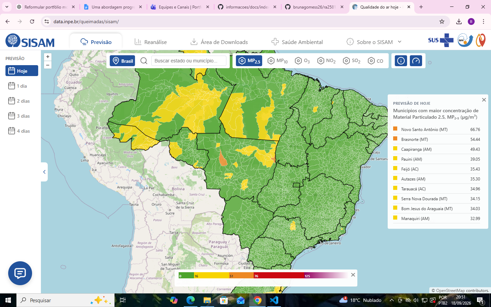

Em destaque
SISAM — INPE
Sistema do Instituto Nacional de Pesquisas Espaciais que integra qualidade do ar e saúde pública, com previsão e reanálise de poluentes por município e mapas interativos.
Minha contribuição
Atuo em qualidade de software, levantamento de requisitos, validação de interfaces, automação de testes e verificação da consistência entre dados, APIs e visualizações cartográficas.